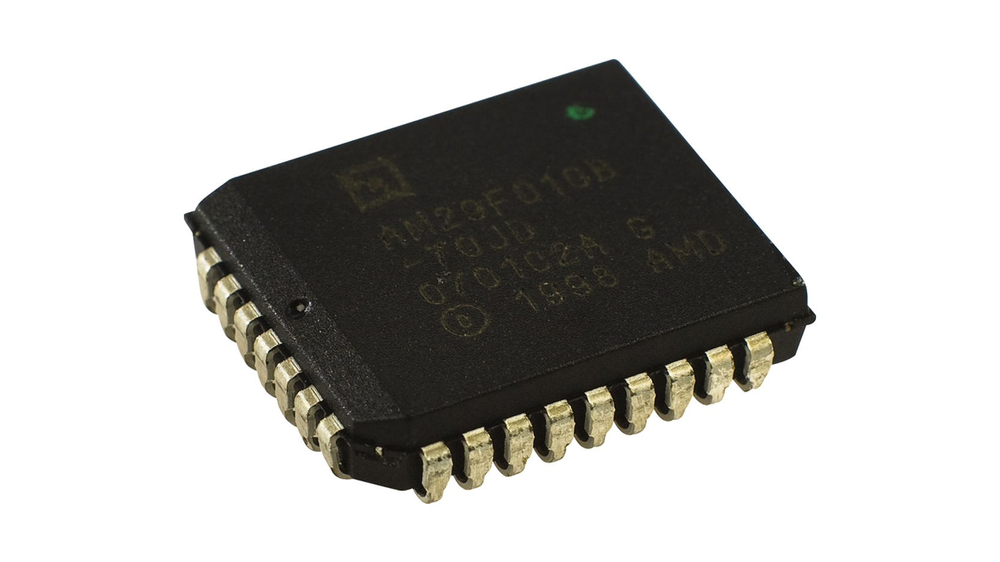

Main Memory
RAM
RAM (random access memory) is a computer's short-term memory, where the data that the processor is currently using is stored. Your computer can access RAM memory much faster than data on a hard disk, SSD, or other long-term storage device. RAM is also volatile as when the computer turns off all data stored in RAM is lost.
RAM is used for immediate data storage and retrieval — any task that requires quick access to computing resources. Another use for RAM is to help your computer load previously-accessed information more quickly.

ROM
Read-only memory, or ROM, is a type of computer storage containing non-volatile, permanent data that, normally, can only be read, not written to.
ROM (read-only memory) is a non-volatile memory type. This means it receives data and permanently writes it on a chip, and it lasts even after you turn off your computer. The data is coded to not be overwritten, so it's used for things like your printer software or your startup programs.

Virtual Memory
Virtual memory is a memory management technique where secondary memory can be used as if it were a part of the main memory. Virtual memory uses both hardware and software to enable a computer to compensate for physical
memory shortages, temporarily transferring data from random access memory (RAM) to secondary storage.